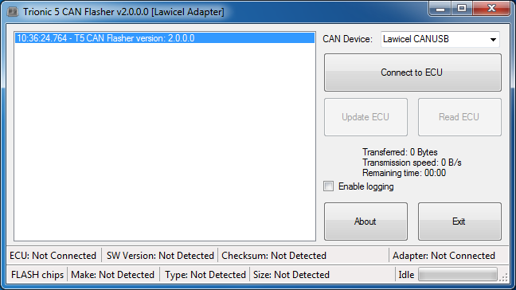

The T5 CAN Flasher II is an Open Source tool used to read and write software in Trionic 5 based ECU’s.
It has a clean informative User Interface that shows rich information about your ECU and BIN file.
Easy selection of CAN adapter:
- Lawicel
- Combi
- Mictronics
- Just4Trionic
- Kvaser
Remembers your selection for next time.
Rigorous checking of all CAN bus transfers and FLASH update progress to give you greater confidence that your FLASH actually updated.
- If it didn’t you are told about the failure and have the option to try to recover your ECU by retrying your update.
- Don’t close T5 CAN Flasher or disconnect power to your ECU otherwise you won’t be able to try to recover your ECU and BDM recovery will be your only option.
Uses a new version of MyBooty which works with more types of replacement FLASH chips:
- Atmel AT29C010A
- AT29C512 (T5.2)
- AMIC 29010L
- ST M29F010
- Microchip SST39SF010A
- AMD 29F010 chips
- Original AMD/Intel/CSI 28F010 (28F512 in T5.2 ECUs).
Can ‘convert’ a T5.5 ECU for use as a T5.2 ECU (and back again)
Update a T5.5 ECU with T5.5 a ‘standard’ 128 kB T5.2 BIN file without having to create a double T5.2 BIN first.
Reading (DUMPing) a ‘converted’ T5.5 ECU produces a standard 128 kB T5.2 BIN
Download (951 KiB)
md5: -
Changelog